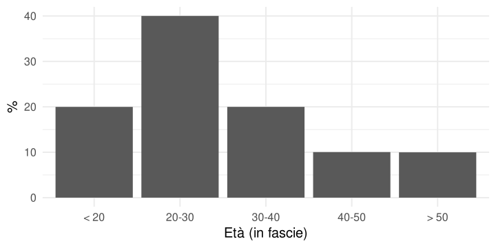
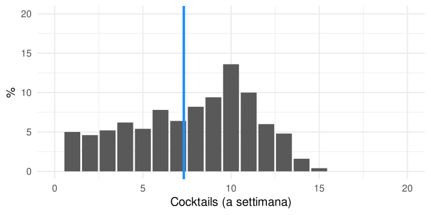
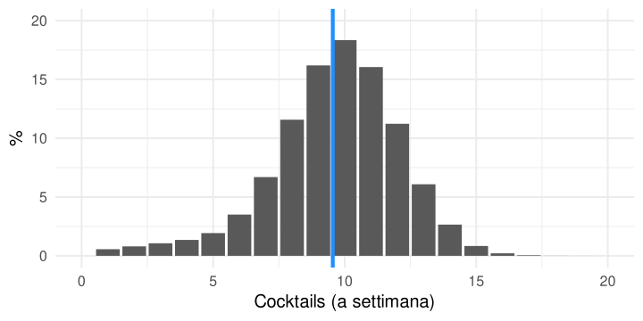
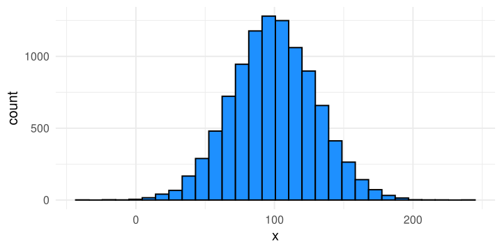

Statistica Descrittiva
ADCOM 2025-2026
![]()
Ultimo aggiornamento: 03-04-2026
Statistiche, parametri, popolazioni e campioni
Popolazione e campioni
La popolazione è l’insieme di riferimento/target dal quale eventualmente estraiamo il nostro campione. La popolazione può essere infinita o finita. Nella maggior parte dei casi, pur essendo in linea di principio finita (ad esempio le persone iscritte a Unipd) si lavora comunque su un campione.
Tramite campionamento, il campione viene selezionato/estratto dalla popolazione e diventa oggetto di misurazione e analisi. Pur essendoci diversi tipi di campionamento, la caratteristica fondamentale è la rappresentatività.
Un campione rappresentativo viene definito come un’immagine ridotta e fedele della popolazione da cui è stato estratto. L’altra caratteristica importante di un campione è la numerosità (che indichiamo con \(N\)) che indica il numero di unità statistiche.
Tipologie di campionamento
Statistiche e parametri
La popolazione di riferimento è associata ad alcune caratteristiche incognite chiamate parametri e solitamente rappresentati con lettere greche \(\mu\), \(\sigma\), etc.
Una statistica è una caratteristica del campione. Mentre il parametro (ad esempio l’altezza media) è incognito, la statistica (altezza media del campione) è nota e calcolabile. Le statistiche sono stimatori dei parametri incogniti e si indicano solitamente con lettere latine minuscole (\(\bar x\), \(s^2\), etc.).
Il concetto di stima è sempre e inevitabilmente associato al concetto di errore. L’errore può essere di tipo sistematico e/o casuale. Una buona stima (fatta su un campione) non ha un errore sistematico e riduce il più possibile quello casuale.
Esempi di statistiche
Qualsiasi operazione applicata su un campione che ne descrive una caratteristica è definita come una statistica che, con un certo grado di errore, stima il rispettivo parametro della popolazione. Ad esempio:
- media
- mediana
- massimo
- minimo
- …
Sono tutte statistiche calcolate su un campione che descrivono parametri della popolazione.
Statistiche come domande
Le statistiche quindi sono dei modi per ridurre la complessità di un certo dato ed estrarre delle informazioni di interesse.
Un modo interessante di vederle è come se fossero delle domande fatte ai nostri dati. Queste domande sono fatte in modo molto mirato e forniscono risposte molto mirate.
La qualità, i limiti e la quantità di informazione della risposta sono funzione di quanto la domanda è adatta a quello che veramente voglio. In un certo senso possiamo parlare di validità delle statistiche.
Statistiche come riduzione di complessità
Le statistiche permettono di riassumere centinaia, migliaia, milioni di dati in pochi numeri. Il prezzo da pagare è quello di capire esattamente:
- il significato di quella statistica
- i limiti e le criticità di quella statistica
- il fatto che sto perdendo informazione (ridurre la complessità = perdita informazione)
- il fatto che più statistiche sono sempre meglio di una sola (minore riduzione di complessità)
Come analogia, un abstract o riassunto di un articolo è molto cognitivamente conveniente per avere un’idea generale. Per capire veramente l’argomento è necessario leggerlo interamente e magari leggerne più di uno.
Un esempio
Immaginiamo di avere tutta la popolazione Padovana e di voler capire il numero di cocktails bevuti a settimana in funzione dell’età. Qui vediamo la distribuzione marginale dell’età:

Un esempio
Qui vediamo la distribuzione marginale dei cocktails. La media è di circa 7.5:

Un esempio
Infine vediamo la relazione tra cocktail ed età in fascie:

Un esempio
Ora immaginiamo di selezionare un campione di \(N = 500\) da questa popolazione in modo totalmente casuale. La media è di circa 7.3:

Un esempio
Vediamo invece, campionando in modo non casuale, selezionando con più probabilità giovani (< 30 anni)La media è di circa 9.5:

Un esempio

Un esempio
Per stimare in modo adeguato il parametro media di cocktails bevuti nella popolazione di riferimento, il campione dovrebbe essere rappresentativo per tutte quelle caratteristiche che hanno un impatto (età in questo caso).
| age | % | drinks | avg |
|---|---|---|---|
| < 20 | 0.2 | 10 | 8 |
| 20-30 | 0.4 | 10 | 8 |
| 30-40 | 0.2 | 5 | 8 |
| 40-50 | 0.1 | 4 | 8 |
| > 50 | 0.1 | 1 | 8 |
| age | % | drinks | avg |
|---|---|---|---|
| < 20 | 0.2 | 10 | 7 |
| 20-30 | 0.4 | 10 | 7 |
| 30-40 | 0.2 | 5 | 7 |
| 40-50 | 0.1 | 4 | 7 |
| > 50 | 0.1 | 1 | 7 |
| age | % | drinks | avg |
|---|---|---|---|
| < 20 | 0.3 | 10 | 10 |
| 20-30 | 0.6 | 10 | 10 |
| 30-40 | 0 | 5 | 10 |
| 40-50 | 0 | 4 | 10 |
| > 50 | 0 | 1 | 10 |
Exploratory data analysis (EDA)
EDA, the big picture

EDA, principi
In generale, l’esplorazione (dovrebbe) è il primo passo quando si affronta un dataset. Anche nell’esplorazione ci sono degli step, quello che consiglio:
- Individuare chiaramente la tipologia di variabile/i
- Rappresentare con un grafico (adeguato)
- Calcolare statistiche descrittive (adeguate)
- Eventualmente integrare grafici e statistiche
Un esempio, Di Marco et al. (2020)
L’articolo di Di Marco et al. (2020) esamina come le risorse psicosociali dei volontari (inclusi benessere professionale, senso di comunità ed esperienze traumatiche) siano correlate alla loro qualità della vita complessiva.
I dati sono disponibili direttamente sul sito della rivista link. Ho pulito e sistemato un pochino il dataset, lo potete trovare qui:
0. Dataset
Intanto le prime cosa da fare sono quelle di capire quante righe e quante colonne ha il dataset. In questo caso abbiamo 96 righe (osservazioni/soggetti) e 24 colonne (variabili).
1. Tipologia di variabili
Proviamo ad esplorare ed individuare qualche tipologia di variabili.
educationageresidenceattachment(in questo caso intesa come senso di comunità)
1. Tipologia di variabili
education: è una variabile ordinale con 3 modalità (o livelli)sec_school<high_school<degree.age: è una variabile numerica su scala a rapporti. In questo caso espressa in anni (quindi numeri interi).residence: è una variabile nominale (o categoriale) con 3 modalità (o livelli)north,centralesouthattachment: tecnicamente è una media o somma di item ordinali. Nella pratica (ma ci sono obiezioni) viene considerata una scala ad intervalli.
Esplorazione univariata
Con esplorazione univariata si intende esplorare una o più variabili singolarmente ovvero senza considerare allo stesso tempo altre variabili. L’obiettivo è quello di:
- assicurarsi che la variabile sia stata correttamente intepretata dal software che stiamo utilizzando
- controllare la presenza di errori, valori anomali e/o impossibili
- controllare la presenza di dati mancanti
- esplorare caratteristiche della variabile usando statistiche descrittive
Intepretazione del software
Presenza di errori e/o valori anomali
Questo punto è molto importante. La presenza di valori anomali o errori può impattare notevolmente le analisi ed i risultati (vedremo poi un esempio). Un punto di partenza è:
- ci sono dei limiti (in senso matematico) oggettivi nella variabile? Ad esempio, avere nella variabile età valori molto alti (70-80) quando ho raccolto dati nelle scuole o avere valori impossibili (e.g., 200). Soprautto se i dati sono raccolti o inseriti manualmente può succedere.
- ci sono dei valori anomali in termini di tipologia di dato? Ad esempio lettere o stringhe dove dovrebbero esserci numeri e viceversa? Questo può essere molto problematico.
Presenza di errori e/o valori anomali
- Sopratutto per i questionari, il massimo e minimo sono consistenti? Se un questionario ha 10 item con likert 1-5, il minimo è 10 ed il massimo è 50. Valori minori o maggiori sono probabilmente errori o dati mancanti.
- Ci sono dati mancanti? Quanti sono, dove, e se possibile capire il motivo. I partecipanti potevano non rispondere? Sono errori di salvataggio/inserimento? Possono avere un significato o sono totalmente casuali? I dati mancanti possono essere molto problematici.
Statistiche descrittive
Una statistica descrittiva è una funzione dei dati osservati che ha lo scopo di riassumere, sintetizzare o rappresentare in modo compatto le caratteristiche principali di un insieme di dati. Quindi:
- è una funzione –> un insieme di calcoli
- riassumere/sintetizzare –> di solito 1/2 valori che rappresentano una proprieta specifica
- è di natura descrittiva, senza l’obiettivo di trarre conclusioni o inferenze
❓ Question Time
Conoscete qualche statistica descrittiva?
Statistiche di tendenza centrale
Le statistiche di tendenza centrale restituiscono un valore rappresentativo o centrale di una distribuzione di dati. Questo valore può essere posizionato al centro, rappresentare un valore tipico o quello più ricorrente. Solitamente ci sono tre principali statistiche di tendenza centrale:
- Media
- Mediana
- Moda
Media
L’ Eq. 1 illustra come calcolare la media di una variabile \(x\) misurata su un campione di numerosità \(n\).
\[ \bar x = \frac{1}{n} \sum^n_{i = 1} x_i \tag{1}\]
Quindi prendiamo tutti (\(n\)) gli \(x\), sommiamo i loro valori e dividuamo per il numero \(n\). Quello che otteniamo è un valore che, sulla scala della variabile, rappresenta la quantità media.
Off-topic: come leggere le formule
Useremo poche formule ma è importante avere una notazione chiara e consistente e saperla leggere. Una volta che è abbastanza chiaro, le formule sono un modo sintetico ed efficace di rappresentare un concetto complesso.
- \(x\) è una variabile generica, può essere qualsiasi lettera (latina solitamente)
- La barra sopra \(\bar x\) indica solitamente la media della variabile \(x\)
- \(\sum^n_{i = 1}\) indica che facciamo la somma partendo da \(i = 1\). Quindi \(i = 1 \quad x_1\), poi \(i = 2 \quad x_1 + x_2\), \(i = 3 \quad x_1 + x_2 + x_3\) fino a \(i = n \quad x_1 + x_2 + \dots + x_n\).
Media
Secondo voi, la media di questa distribuzione di dati dove si potrebbe posizionare?
